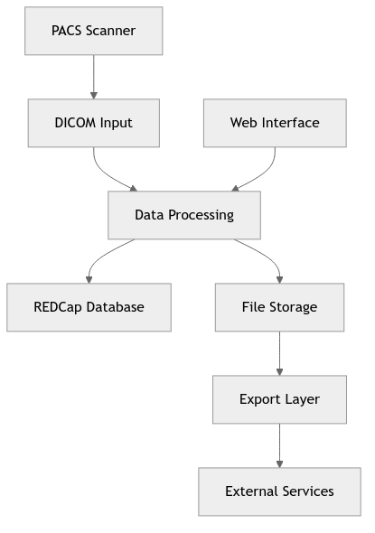
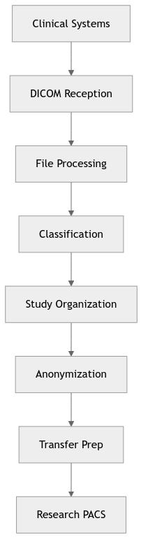
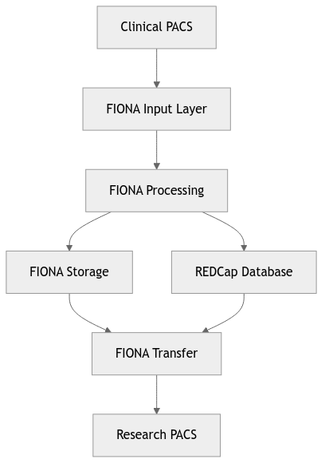

* ARCHITECTURE (options) *
For: Developers, system architects
Contains:
Source code documentation
System components description
APIs and interfaces
Scripts and tools
Data flow diagrams
Core Components
Data Reception
storescpFIONA - Custom DICOM SCP (Service Class Provider) server
storectl.sh - Service controller for DICOM reception
Named pipes - Communication mechanism between components
Data Processing
processSingleFile3.py - Main DICOM processing daemon
detectStudyArrival.sh - Study arrival detection and workflow management
Classification system - Rule-based study classification
Data Management
File system organization - Project-specific directory structures
Symbolic link management - Study/Series organization
Data cleanup - Automated file maintenance
Data Transfer
anonymizeAndSend.py - Data anonymization and transfer
sendFiles.sh - Automated file transfer to research PACS
Transfer request system - REDCap integration for transfer management
System Architecture
FIONA operates as a multi-layered system:
Network Layer - DICOM protocol handling
Processing Layer - Data classification and organization
Storage Layer - File system management
Transfer Layer - Data export and anonymization
Management Layer - Monitoring and control
General overwier (ver. 1)
More detailed system overwier (ver. 2).
![graph TB
subgraph ext [" External Systems "]
PACS[📡 PACS/Scanner]
REDCap[🗄️ REDCap Database]
Cloud[☁️ External Services]
end
subgraph fiona [" FIONA System "]
Input[📥 DICOM Input<br/>Store SCP, MPPS]
Processing[🔄 Data Processing<br/>Parse, Anonymize, Route]
Storage[💾 File Storage<br/>Archive & Metadata]
Export[📦 Export Engine<br/>ZIP, Format Convert]
Management[⚙️ System Management<br/>Monitor, Jobs, Health]
WebUI[🌐 Web Interface<br/>Portal & API]
end
%% Main flow
PACS -->|Medical Images| Input
Input --> Processing
Processing --> Storage
Storage --> Export
Export --> Cloud
%% REDCap integration
Processing <-->|Project Data| REDCap
%% User interaction
WebUI --> Processing
WebUI --> Export
%% Management
Management --> Input
Management --> Processing
Management --> Storage
%% Styling
classDef external fill:#ffebee,stroke:#d32f2f,stroke-width:2px
classDef core fill:#e3f2fd,stroke:#1976d2,stroke-width:2px
classDef interface fill:#e0f2f1,stroke:#00796b,stroke-width:2px
class PACS,REDCap,Cloud external
class Input,Processing,Storage,Export,Management core
class WebUI interface](../_images/mermaid-63e15246208d0af88ea42454acfdfa50ccbfe73a.png)
Key Features
Multi-project support - Handles multiple research projects simultaneously
Automated workflows - Minimal human intervention required
Data anonymization - Compliant with research privacy requirements
Scalable design - Can handle high-volume data processing
Monitoring and logging - Comprehensive system monitoring
Technology Stack
Python - Core processing logic
Bash - System administration and automation
PHP - Web interface components
DICOM toolkit - Medical image handling
REDCap - Transfer request management
Docker - Containerized processing components
Deployment Model
FIONA is typically deployed as:
Single-server installation - All components on one machine
Processing user account - Dedicated system user for operations
Service-based architecture - Daemon processes for continuous operation
Cron-based scheduling - Automated task execution
Such an architecture ensures reliable, automated processing of medical image data while maintaining compliance with research and privacy requirements.
Data Flow Overview
Data flow diagram (ver.2 - more general)
Phase 1: Data Reception
Input: DICOM files from clinical PACS Components: storescpFIONA, storectl.sh Output: Raw DICOM files in temporary storage
Clinical PACS → storescpFIONA → /data/site/.arrived/
↓
Named Pipe (/tmp/.processSingleFilePipe)
Process: 1. Clinical PACS sends DICOM files via DICOM protocol 2. storescpFIONA receives files and stores in /data/site/.arrived/ 3. File arrival notification sent via named pipe 4. Files moved to /data/site/archive/ for processing
Phase 2: Initial Processing
Input: Raw DICOM files Components: processSingleFile3.py, receiveSingleFile.sh Output: Processed DICOM files with metadata
/data/site/archive/ → processSingleFile3.py → /data/site/raw/
↓
Classification Rules (classifyRules.json)
↓
Study/Series Organization
Process: 1. processSingleFile3.py daemon receives file notifications 2. DICOM headers are parsed and metadata extracted 3. Files are classified using rule-based system 4. Study and series information is organized 5. Symbolic links are created for easy access
Phase 3: Study Organization
Input: Processed DICOM files Components: detectStudyArrival.sh Output: Organized study structure
/data/site/raw/ → detectStudyArrival.sh → Study Job Directory
↓
Study Completion Detection
↓
Workflow Trigger
Process: 1. detectStudyArrival.sh monitors for completed studies 2. Study completion is detected when all series arrive 3. Study job directory is created 4. Workflow processes are triggered
Phase 4: Anonymization
Input: Organized study data Components: anonymizeAndSend.py, anonymize.sh Output: Anonymized DICOM files
Study Data → anonymizeAndSend.py → Anonymized Data
↓
REDCap Configuration
↓
Project-specific Rules
Process: 1. Transfer requests are read from REDCap 2. Project-specific anonymization rules are applied 3. DICOM tags are modified according to requirements 4. Anonymized files are prepared for transfer
Phase 5: Transfer Preparation
Input: Anonymized study data Components: createTransferRequest.py, createZipFileCmd.php Output: Transfer-ready data packages
Anonymized Data → createTransferRequest.py → Transfer Package
↓
ZIP File Creation
↓
MD5 Checksum Generation
Process: 1. Transfer requests are processed 2. Data is packaged into ZIP files 3. MD5 checksums are generated for integrity 4. Transfer packages are prepared
Phase 6: Export
Input: Transfer packages Components: sendFiles.sh Output: Data transferred to research PACS
Transfer Package → sendFiles.sh → Research PACS
↓
SFTP Transfer
↓
Transfer Confirmation
Process: 1. SFTP connection established to research PACS 2. Files are transferred with integrity checking 3. Transfer status is logged 4. Success/failure notifications are sent
Named Pipes: - /tmp/.processSingleFilePipe - File processing notifications - Project-specific pipes: /tmp/.processSingleFilePipe{PROJECT}
Configuration Files: - /data/config/config.json - Main system configuration - classifyRules.json - Classification rules - REDCap integration for transfer management
Log Files: - System logs in /var/www/html/server/logs/ - Processing logs in /data/logs/
File Processing Errors: - Failed files are logged and can be reprocessed - Corrupted DICOM files are quarantined - Processing retries are implemented
Transfer Errors: - Failed transfers are retried automatically - MD5 checksum verification ensures data integrity - Transfer status is tracked in REDCap
System Recovery: - Daemon processes can be restarted automatically - File system consistency is maintained - Backup and recovery procedures are in place
System Monitoring: - heartbeat.sh - System health monitoring - cron.sh - Scheduled task management - Log rotation and management
Data Flow Monitoring: - File arrival detection - Processing status tracking - Transfer completion monitoring
This data flow ensures reliable, automated processing of medical image data while maintaining data integrity and compliance with research requirements.
The FIONA system processes medical image data through several distinct phases:
Data Reception - DICOM files arrive from clinical systems
Initial Processing - Files are processed and classified
Study Organization - Data is organized into study/series structure
Anonymization - Data is anonymized for research use
Transfer Preparation - Data is prepared for transfer
Export - Data is transferred to research PACS